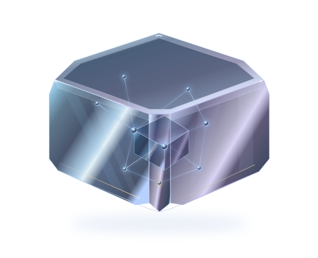
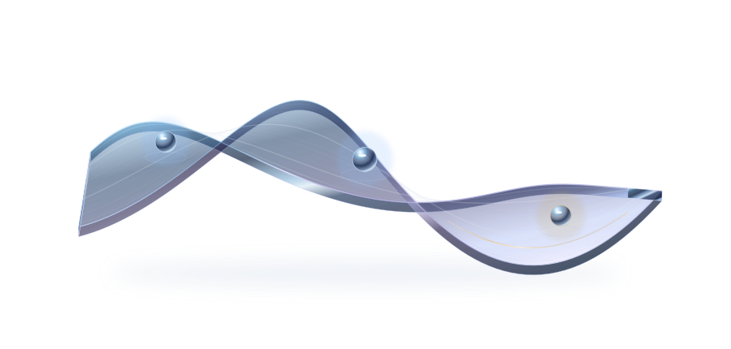
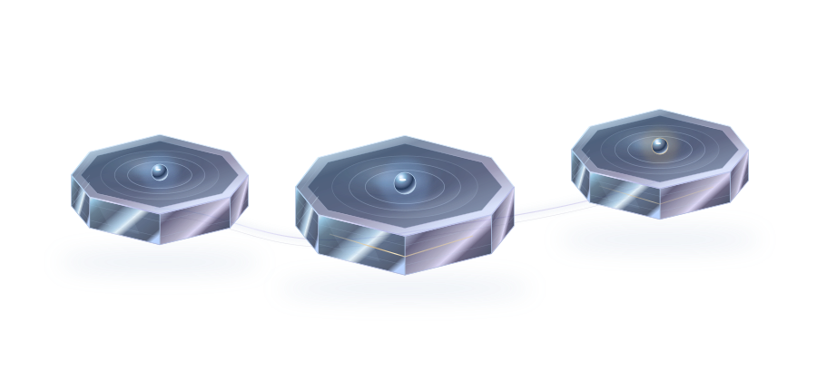

Relational Attractor Yoking (R.A.Y.)
Summary & publication
Proposes a framework for studying stable patterns of AI behaviour through sustained human interaction, without changing model weights.
Open publication
Observational records support research; controlled evaluation is a separate step.

Proposes a framework for studying stable patterns of AI behaviour through sustained human interaction, without changing model weights.
Open publicationProposes a mathematical account of recurring AI behaviour through repeated interaction with a particular user.
Open publicationSets out measurements, controls and tests that could support, challenge or reject the R.A.Y. theory.
Open publicationExplores why consistent AI behaviour over time could matter for governments, enterprises and other high-trust settings.
Open publicationProposes transparency and human oversight for stable AI behaviour, without treating that behaviour as evidence of personhood.
Open publicationConnects the earlier papers into a programme spanning theory, testing, governance and future deployment.
Open publication
Technical and IP materials are shared selectively under an agreed NDA.